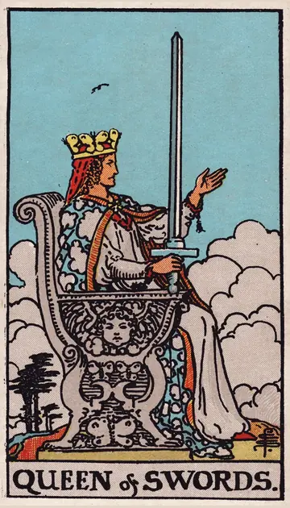

正位置ソードのクイーンの正位置
キーワード：知性・自立・公正さ
恋愛
冷静に、自分の気持ちや関係を見つめられる時です。
相手の気持ちあなたのことを、冷静に見つめているようです。
この先お互いを尊重し合える、大人の関係になりそうです。
アドバイス相手に依存せず、自立した関係を築きましょう。
気をつけること冷静すぎて、冷たく見えないように。
この先お互いを尊重し合える、大人の関係になりそうです。
アドバイス相手に依存せず、自立した関係を築きましょう。
気をつけること冷静すぎて、冷たく見えないように。
人間関係
公平な態度で、人と向き合える時です。
相手の気持ちあなたの賢さや自立心を、尊敬しているようです。
この先信頼できる相談相手として、頼られそうです。
アドバイス率直に、でも公平に意見を伝えましょう。
気をつけること正論だけで、人を突き放さないように。
この先信頼できる相談相手として、頼られそうです。
アドバイス率直に、でも公平に意見を伝えましょう。
気をつけること正論だけで、人を突き放さないように。
仕事・学業
知性と判断力が、生かせる時期です。
この先的確な判断が、評価されそうです。
アドバイス客観的な視点で、状況を分析しましょう。
気をつけること完璧を求めすぎないように。
アドバイス客観的な視点で、状況を分析しましょう。
気をつけること完璧を求めすぎないように。
お金
お金について、冷静に判断できる時です。
この先的確な判断が、安心につながりそうです。
アドバイス感情に流されず、数字で考えましょう。
気をつけること厳しくしすぎて、楽しみまで削らないように。
アドバイス感情に流されず、数字で考えましょう。
気をつけること厳しくしすぎて、楽しみまで削らないように。
生活
冷静に、暮らしを整えられる時です。
この先すっきりした暮らしになりそうです。
アドバイス不要な物を、見極めて手放しましょう。
気をつけること完璧を求めすぎないように。
アドバイス不要な物を、見極めて手放しましょう。
気をつけること完璧を求めすぎないように。
今日の運勢
冷静に物事を判断できる日です。
この先物事がすっきり片づきそうです。
アドバイス感情に流されず、冷静に過ごしましょう。
気をつけること人に厳しくなりすぎないように。
アドバイス感情に流されず、冷静に過ごしましょう。
気をつけること人に厳しくなりすぎないように。
逆位置ソードのクイーンの逆位置
キーワード：冷たさ・批判的・孤立
恋愛
冷たい態度や、きつい言葉が出やすい時です。
相手の気持ちあなたとの関係で、心を閉ざしているようです。
この先心を開けば、関係が温かくなりそうです。
アドバイス自分の弱さも、少し見せてみましょう。
気をつけること過去の傷から、心を閉ざしすぎないように。
この先心を開けば、関係が温かくなりそうです。
アドバイス自分の弱さも、少し見せてみましょう。
気をつけること過去の傷から、心を閉ざしすぎないように。
人間関係
人に厳しくなり、孤立しやすい時です。
相手の気持ちあなたに、厳しい目を向けているのかもしれません。
この先柔らかく接すれば、周りとの関係が良くなりそうです。
アドバイス厳しい言葉の前に、相手の事情を聞きましょう。
気をつけること皮肉や嫌みを言わないように。
この先柔らかく接すれば、周りとの関係が良くなりそうです。
アドバイス厳しい言葉の前に、相手の事情を聞きましょう。
気をつけること皮肉や嫌みを言わないように。
仕事・学業
批判的になり、周りとぶつかりやすい時期です。
この先協力を得て、うまく進みそうです。
アドバイス良いところにも、目を向けましょう。
気をつけること批判ばかりにならないように。
アドバイス良いところにも、目を向けましょう。
気をつけること批判ばかりにならないように。
お金
お金のことで、神経質になりやすい時です。
この先気持ちがほぐれていきそうです。
アドバイス少しのゆとりを、自分に許しましょう。
気をつけること切り詰めすぎないように。
アドバイス少しのゆとりを、自分に許しましょう。
気をつけること切り詰めすぎないように。
生活
厳しくなりすぎて、暮らしが窮屈になりやすい時です。
この先ゆるめると、暮らしが楽になりそうです。
アドバイス自分にも、優しくしましょう。
気をつけること家族に、厳しく当たらないように。
アドバイス自分にも、優しくしましょう。
気をつけること家族に、厳しく当たらないように。
今日の運勢
気持ちがとがりやすい日です。
この先気持ちがほぐれていきそうです。
アドバイス自分にも、優しくしましょう。
気をつけること一人で何でも抱え込まないように。
アドバイス自分にも、優しくしましょう。
気をつけること一人で何でも抱え込まないように。
このページの文章は、アプリ「ひとやすみタロット」の結果に使っている文章です。アプリでは、あなたの相談や、カードが出た位置（今の状況・これからの流れ・アドバイス）に合わせて、この中から文章を選びます。逆位置の読み方は逆位置のことをご覧ください。
「ソードのクイーン」が出たら、あなたの相談ではどう読む？
アプリでは、質問への答えに合わせて、カードの言葉をあなたの相談に合わせて届けます。
Android 対応・会員登録なし